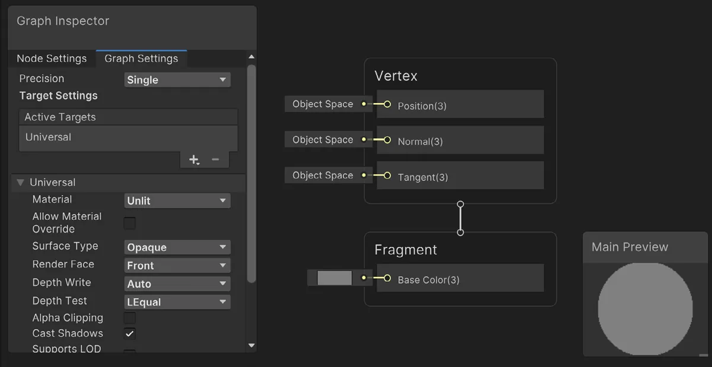
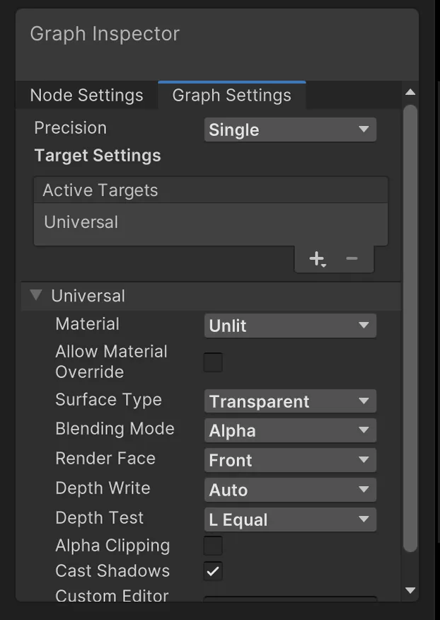
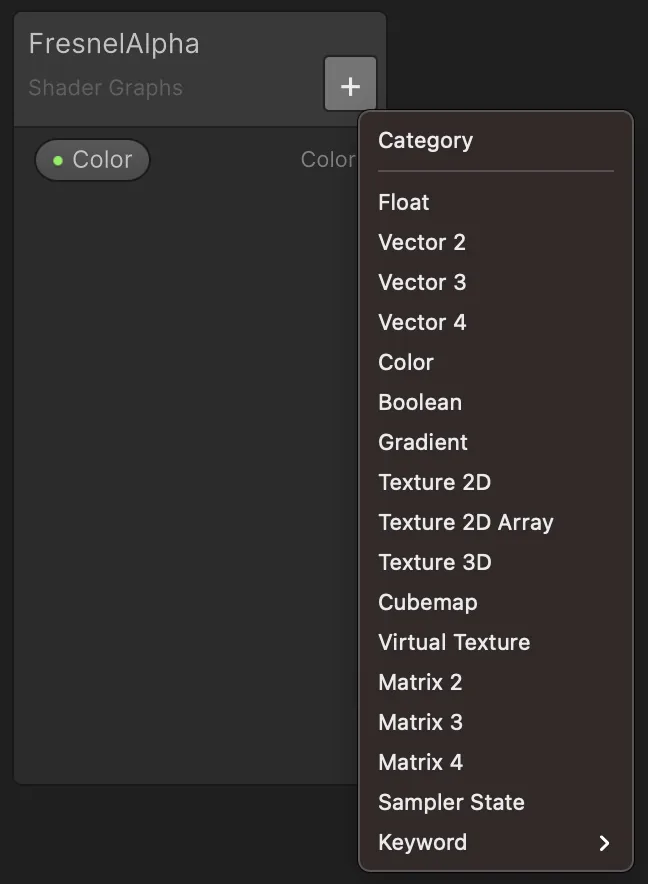
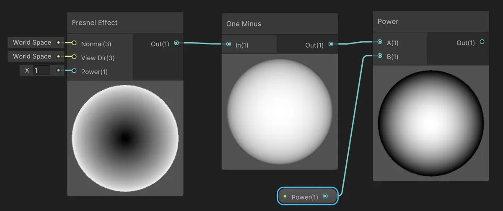
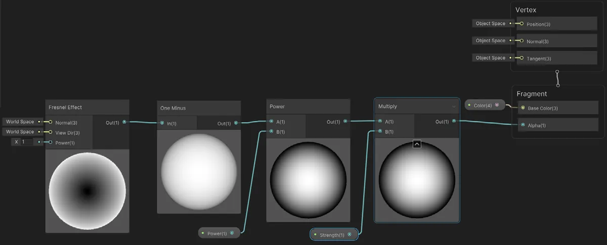
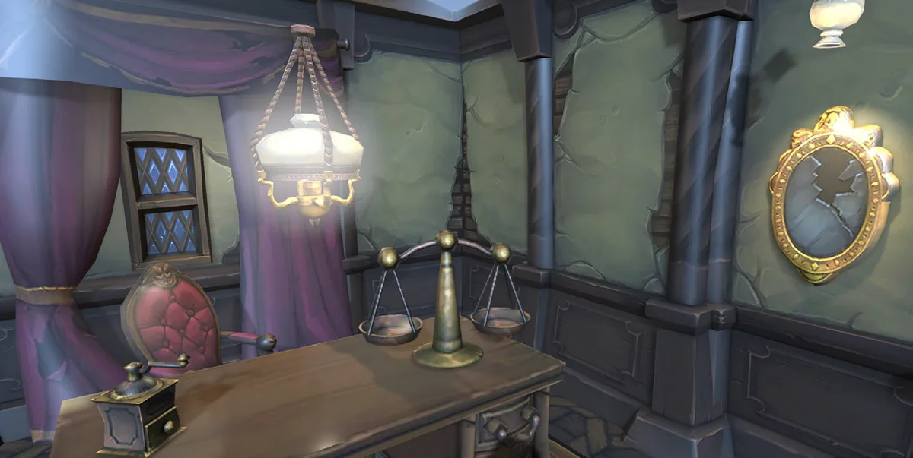

兼容 URP 的附加工具
使用 URP 的另一个好处是，它与 Unity 最新的创作工具兼容，这些工具让复杂的创作任务变得技术美术也能胜任。本章将讲解如何使用着色器图（Shader Graph）创建着色器，以及如何使用视觉效果图（VFX Graph）创建粒子效果。
着色器图（Shader Graph）
着色器图把自定义着色器带入美术的工作流程。当你使用 URP 模板创建项目或导入 URP 包时，就已包含 Shader Graph 工具。
完整讲解 Shader Graph 值得单独写一本指南，但我们可以通过创建「光照」一章中的 Light Halo 着色器，来回顾一些基础却关键的步骤。
- 在 Project 窗口中右键单击，找到合适的文件夹，然后选择 Create > Shader Graph > URP > Unlit Shader Graph。在本例中，请选择 Unlit。将新资源命名为 FresnelAlpha。
- 双击新建的 Shader Graph 资源以启动 Shader Graph 编辑器。
如果你熟悉着色器，就会认出 Vertex 节点和 Fragment 节点。默认情况下，这个着色器会通过 Vertex 节点确保任何使用该材质（即使用此着色器的材质）的模型都被正确放置到摄像机视图中，并通过 Fragment 节点把每个像素设为灰色。
- 这个着色器将设置对象的 alpha 透明度。因此它需要应用于 Transparent 渲染队列。将 Graph Inspector > Graph Settings > Surface Type 改为 Transparent。你会看到 Fragment 节点现在除了 Base Color 之外，还多了一个 Alpha 输入。
- 为着色器添加属性。例如，添加 Color（类型为 Color），以及 Power 和 Strength（类型为 Float）。
- 使用 Graph Inspector > Node Settings > Default 设置默认值。将 Color 设为白色，Power 设为 4，Strength 设为 1。
- 着色器图通过把节点连接在一起来工作。一个节点会有一个或多个输入和一个输出。要添加节点，右键单击，在顶部搜索面板中选择 Create Node，然后输入 Fre。结果中会显示 Fresnel Effect 节点。
- 节点会显示其效果的预览。注意 Fresnel Effect 在边缘处较亮。该值是视线方向（View）与法线方向（Normal）之间的差值——对于球体而言，这个差值在边缘处最大。
alpha 值在边缘处应当最低。你可以用 One Minus 节点把结果翻转。做法是点击 Create Node 并输入 One，选择 One Minus 节点。然后从 Fresnel Effect 节点的 Out(1) 拖到 One Minus 节点的 In(1)。这里的 1 表示值类型是单个 float。如果是 3，则表示由三个分量组成的向量。
节点应该像这样连接：
- 接下来看看如何控制渐变的尺寸和整体透明度。使用 Power 节点来控制渐变的尺寸。创建一个 Power 节点，把 One Minus 的 Out(1) 连接到 Power 的 A(1)。将 Power 属性拖到图中，并连接到 Power 的 B(1)。此时图应该像这样：
- 使用 Multiply 节点控制整体透明度。创建该节点，把 Power 的 Out(1) 连接到 Multiply 的 A(1)。将 Strength 属性拖到图中并连接到 Multiply 的 B(1)。然后把 Multiply 的 Out(1) 连接到 Fragment 的 Alpha(1)，再把 Color(4) 属性拖到图中并连接到 Fragment 的 Base Color(3)。
请注意，这里的 Color 属性是四分量向量，而 Base Color 是三分量向量。着色器图会将 Color 的前三个分量映射到 Base Color 向量。
- 保存该资源并创建新材质。把这个着色器指定给新材质，该着色器位于 Shader Graphs/FresnelAlpha。
- 现在你可以把该材质应用到对象上，控制它在边缘处的可见性。

全屏着色器图（Fullscreen Shader Graph）
全屏着色器图是 Unity URP 2022 LTS 新增的功能。它允许你创建自定义的后处理通道（pass）。在 Project 面板中右键单击，然后选择 Create > Shader Graph > URP > Fullscreen Shader Graph。
创建全屏着色器图
你可以使用 URP Sample Buffer 节点为片元着色器获取某个像素的颜色，该节点本身使用 BlitSource 选项。下图展示了一个简单的着色（tint）示例。URP Sample Buffer 还提供对世界法线和运动矢量的访问，这些对于边缘检测和运动拖尾都很有用。

要使用这个示例，你需要一种方法，用使用了该着色器的材质来 Blit 当前摄像机渲染纹理的结果。在选中活动的 Renderer Data 资源的情况下，使用 Inspector 添加一个渲染器功能（Renderer Feature）。选择 Full Screen Pass Renderer Feature。

剩下的就是更新该渲染器功能的设置。设置你创建的、使用全屏着色器图的材质，然后选择它在渲染管线中的位置。

下图左侧显示了着色效果。全屏着色器图是创建自定义后处理效果的一种实用方法。

视觉效果图（VFX Graph）
视觉效果图让你能够用对美术友好的、基于节点的图创建各种各样的粒子效果。使用 VFX Graph 可以为项目添加火焰、烟雾、薄雾、火花、魔法球以及许多其他效果。
任何包含用 VFX Graph 创建的效果的游戏，其目标设备都必须支持计算（compute），因为 VFX Graph 使用在 GPU 上运行的计算着色器（compute shader）来确保尽可能最佳的性能。请测试你的代码并加入一个非计算的回退方案，并且在面向低端移动设备的游戏中要节制使用 VFX Graph。
为了更好地熟悉 VFX Graph，我们来走一遍创建烟雾效果的步骤：
- VFX Graph 可以通过 Package Manager 作为包下载。
- 安装 VFX Graph 后，在 Project 窗口 > Assets 文件夹中右键单击时会出现一个新选项。选择 Create > Visual Effects > Visual Effect Graph，并将新资源命名为 Smoke。
相关链接：
- 这篇博客文章通过一个示例项目讲解了 Shader Graph 的流程，并给出了一些进阶建议。
- 在 Unity 网站上进一步了解 Shader Graph。
- 创建一个空的 GameObject，并在 Hierarchy 窗口中选择它。在 Inspector 中，选择 Add Component > Effects > Visual Effect。
另外，你也可以在编辑器中将 Visual Effect Graph 资源添加到 Hierarchy 视图。这样会在添加该组件的同时带上该资源，从而可以跳过步骤 3 和 4。
- 使用 Component Settings 面板选择 Smoke VFX Graph 作为 Asset Template。
- 现在你可以编辑 VFX Graph 了。双击以启动 Visual Effect Graph 窗口。在那里你会看到 Spawn、Initialize、Update 和 Output 上下文（Context）节点已经预先设置好。
你将使用一个图集（Atlas）形式的纹理，其中包含一段动画烟雾精灵。一个 8x8 网格中的 64 张图像序列将作为单个粒子的来源。在任意一帧中，单个粒子只会显示网格中的一张图像。随着每一帧被渲染，它会按预定义的速率循环切换这些图像。下面是 Smoke Sprite Atlas：
